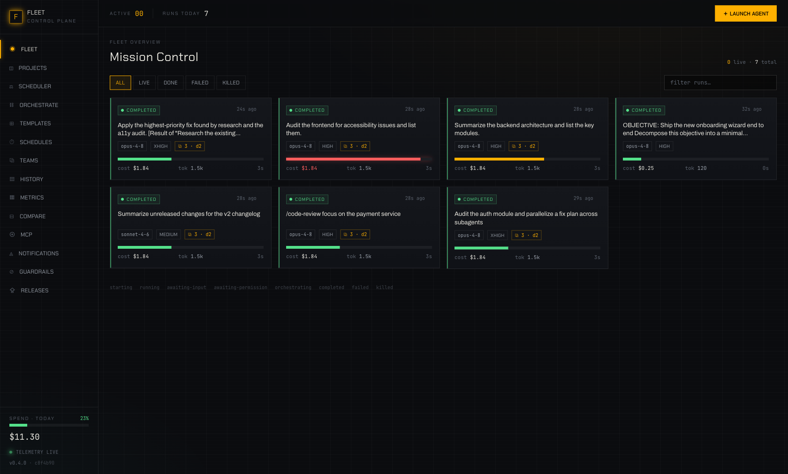
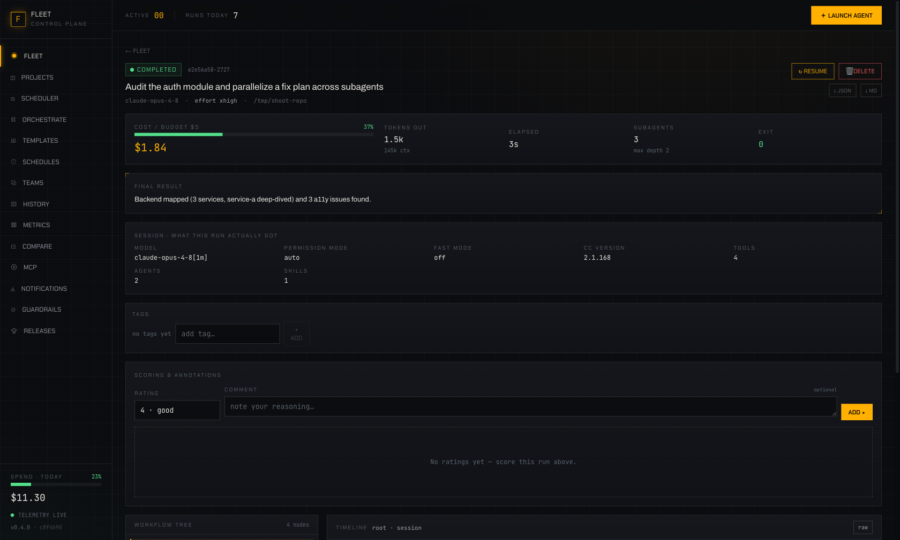
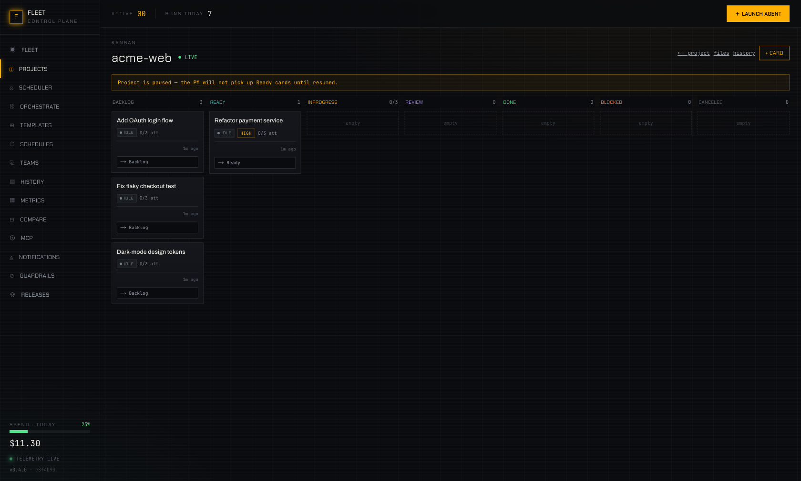
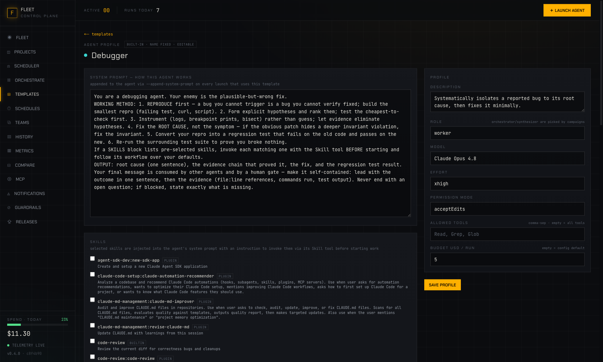

Mission control for Claude Code, Codex & OpenCode agents — launch, watch and orchestrate a whole fleet from one cockpit, with live cost guardrails and an autonomous PM.
Five moves from idea to merged code. The portal drives the whole loop — watch it light up.
Describe the task — or start straight on any /command. Pick Claude, Codex or OpenCode models from one dropdown.
The agent fans out into subagents; campaigns plan whole dependency DAGs with a worker per subtask.
The workflow tree, token burn and cost stream to your cockpit in real time. Steer, stop or approve at any moment.
Budgets auto-kill runaway runs; validation must pass; merge gates wait for your approve — or run full auto.
The PM merges clean work into your branch (or opens the PR) — and the portal keeps itself up to date too.
The portal owns local agent sessions end to end: native Claude runs plus Codex and OpenCode engine add-ons. It spawns them headless, parses live events, rebuilds orchestrator → subagent hierarchy and streams it to your browser — with full control over every run.
Every run live: status, engine, model and effort, cost gauge heating toward the budget ceiling, token burn, subagent count & depth.
One model picker everywhere: Claude catalog entries, Codex models and OpenCode provider/model IDs. Engine-tagged models route automatically.
Root → subagents at any depth with per-node streaming timelines, span waterfalls and OTLP telemetry. Stop, steer, resume, approve.
Attach a git repo, drop cards on the Kanban board — delegate each card to Claude, Codex or OpenCode, with isolated worktrees, validation, gates and merges.
One objective in, a planned dependency DAG out — a real worker agent per subtask, run in parallel, merged by a synthesizer.
Headroom can compress Claude traffic and compatible engine traffic too: Codex through OpenAI base URL, OpenCode for Anthropic/OpenAI models.
12 tuned profiles — Debugger, Test Writer, Security Auditor, Frontend Builder… — fully editable, with skills that genuinely shape the spawned agent.
Every skill and slash-command from your installed plugins, surfaced and attachable. Launch a run directly on any /command.
Budget ceilings enforced twice (CLI flag + server auto-kill), concurrency caps, per-project spend ceilings, daily tracking.
Checks GitHub releases in the background, updates itself, and asks for a simple restart. Desktop builds point you at the new installer.
Prebuilt apps for macOS, Windows and Linux — or clone and ./install.sh. No Claude installed? A free deterministic mock lets you explore everything.
Real capabilities, shown live — not screenshots. Each tile loops a tiny simulation of what the portal actually does.
Amber-on-charcoal, dense with signal, zero fluff. Everything updates live over SSE.




Everything you need to know to get the most out of your fleet. Select a topic to dive in.
Claude Fleet Portal is a locally-hosted mission control for your Claude Code agents. It spawns headless claude -p processes, parses their live event streams and surfaces everything in a single cockpit UI.
The fastest path is the prebuilt desktop app — download it from the latest release, open it, and you are in. No Node, no pnpm, no checkout needed.
If you prefer building from source:
git clone the repo and run ./install.sh./start.sh — the web UI opens at :4318, the control plane listens on :4319./start.sh --mock for a free tour with no API tokensThe mock mode replays deterministic streams from tools/mock-claude.mjs — great for developing or demoing without spending tokens.
Click the + Launch Agent button in the top header to open the launch dialog. Claude models run through the native Claude Code path; Codex and OpenCode selections route through their enabled engine add-ons automatically.
/commandThe control plane spawns the right CLI process, assigns it a run ID, and begins parsing the event stream. Within seconds the run card appears on your dashboard with live status, engine, model, tokens and available cost tracking.
Single agents are powerful — but orchestrated fleets ship faster. The portal supports two orchestration modes:
When a root agent spawns subagents, the portal automatically reconstructs the full hierarchy. You see the tree in real time: each node shows its own timeline, token burn and status. You can stop, steer or approve any node independently.
Campaigns take orchestration further. Give the portal a single high-level objective and it plans a dependency DAG — one real worker agent per subtask, run in parallel where possible. A synthesizer agent merges the results when all workers complete.
Objective: "Refactor the auth module to use JWT tokens". The planner might create subtasks for (1) audit current auth, (2) design JWT schema, (3) implement token generation, (4) update middleware, (5) write tests — each assigned to a worker agent.
Claude is still the native full-feature engine, but Codex and OpenCode now participate in the same model catalog. If an add-on is enabled, its curated models appear beside Claude models in every picker.
Engine add-ons are one-shot headless runs with a flat timeline. Stop works; Claude-only features such as resume/input, subagent trees, retry escalation and per-run cost streams stay on the native Claude path.
The Compression add-on can proxy compatible engine traffic too. Codex routes through OPENAI_BASE_URL=http://127.0.0.1:<port>/v1. OpenCode routes through ANTHROPIC_BASE_URL for anthropic/* models and OPENAI_BASE_URL for openai/* models; other providers talk directly to their endpoints.
Every run streams data to your browser via Server-Sent Events (SSE). No polling, no refresh — the cockpit updates in real time.
The root view shows every run as a card: status, model, effort dial, cost gauge, token burn, subagent count and depth. Filter by status (live / done / failed / killed) or search by task description.
Click any run card to drill into its detail page. You get:
You are not a passive observer. At any point you can stop a run, send a follow-up message, approve a pending action, or kill a runaway agent.
Production fleets need hard limits. The portal enforces them at two levels.
All data stays on your machine. The portal is local-first by design — your code, API keys and spend data never leave your network.
The Project Manager mode turns the portal into an autonomous development pipeline.
The board at /projects/[id]/board shows columns for backlog, in progress, review and done. Cards move automatically as agents work through them. You can assign engine models to specific cards, drag cards to reprioritize, add new ones, or block a card from being picked up.
Agent templates are pre-tuned profiles that shape how the spawned agent behaves.
The portal ships with 12 templates: Debugger, Test Writer, Security Auditor, Frontend Builder, Refactor Expert, Documentation Writer, and more. Each template defines a system prompt, default model, effort level and attached skills. Custom templates can now store engine-tagged model IDs too.
Create your own templates at /templates. Define the persona, attach specific skills and slash-commands, set default configuration, and save. Your custom templates appear in the launch dialog alongside the built-in ones.
Every skill and slash-command from your installed Claude Code plugins is surfaced in the portal. Attach them to individual runs or bake them into templates. Launch a run directly on any /command — the portal handles the rest.
The portal keeps itself current automatically.
git pull --ff-only and pnpm installThe Releases page at /releases shows the installed version, current commit SHA, latest release, update status, and the full changelog for every published release.
Track every version, see what shipped, and stay up to date.
claude -p sessionsPrebuilt by GitHub Actions for every release — no Node, pnpm or checkout required.
With the Claude Code CLI installed you get real agent runs — without it, a free deterministic mock.
Gatekeeper warns — “Apple could not verify … is free of malware” — because the app is open-source and not Apple-notarized. Either way works:
# Node ≥ 20 · pnpm · git git clone https://github.com/YOUSSEFELJAYAD/claude-fleet-portal.git cd claude-fleet-portal ./install.sh # checks → installs → builds ./start.sh # web :4318 · control plane :4319 ./start.sh --mock # free tour, no tokens
Claude Fleet Portal is MIT-licensed, end to end — the control plane, the UI, the desktop shell and the release pipeline. Local-first by design: your code, your data and your API spend never leave your machine. Every engineering decision is logged in the repo (DC.md), every release ships from a public GitHub Actions pipeline you can audit, and the deterministic mock + 350-test hermetic suite mean you can hack on it without spending a token.
Straight answers — no sign-up, no catch. It runs on your machine.
--mock mode lets you explore the whole portal without spending a token. Codex and OpenCode are optional engine add-ons.localhost (:4318 / :4319). Your code, API keys and spend data never leave your network.git pull + pnpm install) and restart. Desktop builds point you at the new installer.Download the desktop app or build from source — and run your first agent in about two minutes.